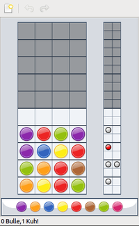

Brett- und Kartenspiele
Zum Verständnis dieses Artikels sind folgende Seiten hilfreich:
Karten- und Brettspiele kennt man auch aus dem echten Leben. Am PC hat man meist die Möglichkeit, auch alleine gegen einen PC-Gegner spielen zu können.
Brettspiele¶
Do'SSi Zo'la.¶
Do'SSi Zo'la ist die Umsetzung des Brettspieles Isola.
Benötigtes Paket:
dossizola (universe)
 mit apturl
mit apturl
Paketliste zum Kopieren:
sudo apt-get install dossizola
sudo aptitude install dossizola
London Law¶
London Law  ist eine Variante des Brettspielklassikers Scotland Yard mit Online-Mehrspieler-Umsetzung. Ein Handbuch steht zur Verfügung.
ist eine Variante des Brettspielklassikers Scotland Yard mit Online-Mehrspieler-Umsetzung. Ein Handbuch steht zur Verfügung.
Benötigtes Paket:
londonlaw (universe)
mit apturl
Paketliste zum Kopieren:
sudo apt-get install londonlaw
sudo aptitude install londonlaw
Mahjongg¶
Hier geht es um die Einzelspielerversion des alten chinesischen Spiels Mah-Jongg. Der Spieler versucht, alle 144 Steine paarweise vom Spielfeld zu nehmen. Es dürfen nur Steine entfernt werden, welche nicht von anderen Steinen teilweise oder vollständig überdeckt sind und von denen mindestens eine Längsseite freiliegt.
Benötigtes Paket:
gnome-mahjongg
mit apturl
Paketliste zum Kopieren:
sudo apt-get install gnome-mahjongg
sudo aptitude install gnome-mahjongg
Nach der Installation erfolgt der Programmstart bei Ubuntu-Varianten mit einem Anwendungsmenü über "Spiele -> Mahjongg".
Nutzer der Desktop-Umgebung KDE können KMahjongg verwenden. Eine weitere (eindimensionale) Variante ist KShisen , während Kajongg der ursprünglichen Variante für vier Spieler/innen entspricht.
Mancala¶
Mancala ist ein Brettspiel bei dem der Inhalt der Spielmulde nach bestimmten Regeln umverteilt wird.
Benötigtes Paket:
mancala (universe)
mit apturl
Paketliste zum Kopieren:
sudo apt-get install mancala
sudo aptitude install mancala

Mastermind¶
Mastermind (ebenfalls bekannt unter den Titeln SuperHirn, Super Code und Variablo) ist ein Logikspiel. Ziel dieses Spiels ist es den vorgegebenen Code, mit den Hinweisen, zu knacken.
Benötigtes Paket:
gnome-mastermind
mit apturl
Paketliste zum Kopieren:
sudo apt-get install gnome-mastermind
sudo aptitude install gnome-mastermind
Kartenspiele¶
Aisleriot¶
Aisleriot ist eine Sammlung von über achtzig verschiedenen Patiencen. Viele Varianten, wie z.B. Freecell, Klondike und Canfield, stehen zur Verfügung.
Benötigtes Paket:
aisleriot
mit apturl
Paketliste zum Kopieren:
sudo apt-get install aisleriot
sudo aptitude install aisleriot
Nach der Installation erfolgt der Programmstart bei Ubuntu-Varianten mit einem Anwendungsmenü über "Spiele -> Aisleriot Solitaire".
gnome-hearts¶
GNOME-Variante des Kartenspiels Hearts.
Benötigtes Paket:
gnome-hearts (universe)
mit apturl
Paketliste zum Kopieren:
sudo apt-get install gnome-hearts
sudo aptitude install gnome-hearts
Ace of Penguins¶
Solitärspiele mit Pinguin-Aussehen
Benötigtes Paket:
ace-of-penguins (universe)
mit apturl
Paketliste zum Kopieren:
sudo apt-get install ace-of-penguins
sudo aptitude install ace-of-penguins
PySolFC¶
PySolFC ist eine Sammlung von verschiedenen Kartenspielen, die mit Python erstellt wurde. Die Installation ist denkbar einfach.
Benötigtes Paket:
pysolfc (universe)
mit apturl
Paketliste zum Kopieren:
sudo apt-get install pysolfc
sudo aptitude install pysolfc
XSkat¶
XSkat ist eine Skatsimulation, die sowohl das Spiel gegen KIs am eigenen Rechner als auch gegen andere menschliche Spieler über LAN oder über IRC unterstützt. In Sachen Einstellung bietet dieses Programm wirklich alles was das Herz begehrt: Es reicht von der Sortierreihenfolge des eigenen Blattes über die Spielstärke der KIs bis zu detaillierten Ramsch-Regeln.
Benötigtes Paket:
xskat (universe)
mit apturl
Paketliste zum Kopieren:
sudo apt-get install xskat
sudo aptitude install xskat
- Erstellt mit Inyoka
-
 2004 – 2017 ubuntuusers.de • Einige Rechte vorbehalten
2004 – 2017 ubuntuusers.de • Einige Rechte vorbehalten
Lizenz • Kontakt • Datenschutz • Impressum • Serverstatus -
Serverhousing gespendet von